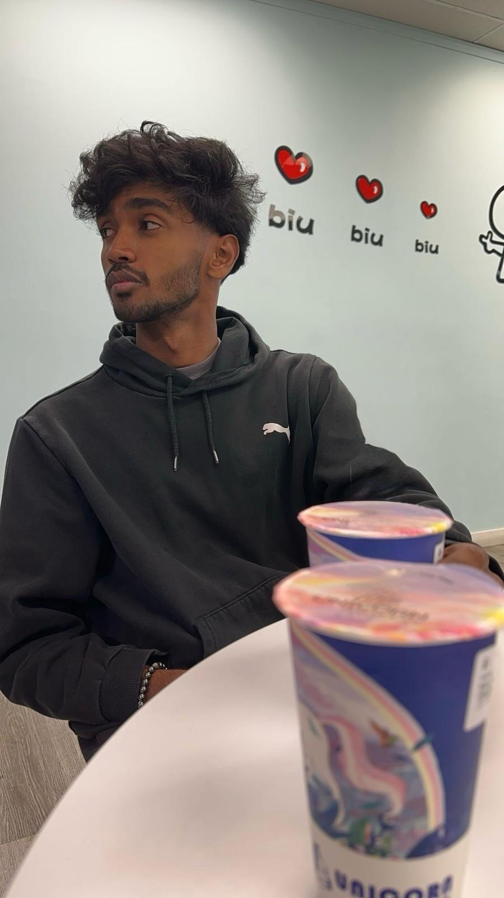

About
I'm Jino.
A full stack developer and problem solver
Hi! I'm a second-year Computer Science student with a strong passion for web development and software engineering.
I have hands-on experience in C, C++, JavaScript, HTML, CSS, and MongoDB, allowing me to build and optimize dynamic
web applications and software solutions.
I'm actively seeking internship opportunities in any domain that allows me to grow, learn, and contribute, whether
it's frontend or backend development, or software engineering. Apart from coding, My interests include personal finance,
trading, self improvement, story-mode games, and tech gadgets.
If you're looking for a motivated and dedicated intern to join your team or to build your dream, let's connect! 🚀
This is one of my favorite quotes
(by Patrik Bet-David)
"When you are winning
You are not good as you think you are,
When you are losing
You are not bad as you think you are."
EXPERIENCE
- Honours Degree in Computer Science
SKILLS
HTML & CSS / UI/UX Design / Javascript / React / Node.Js / MongoDB / Software Engineering / Data Structure Algorithm /
